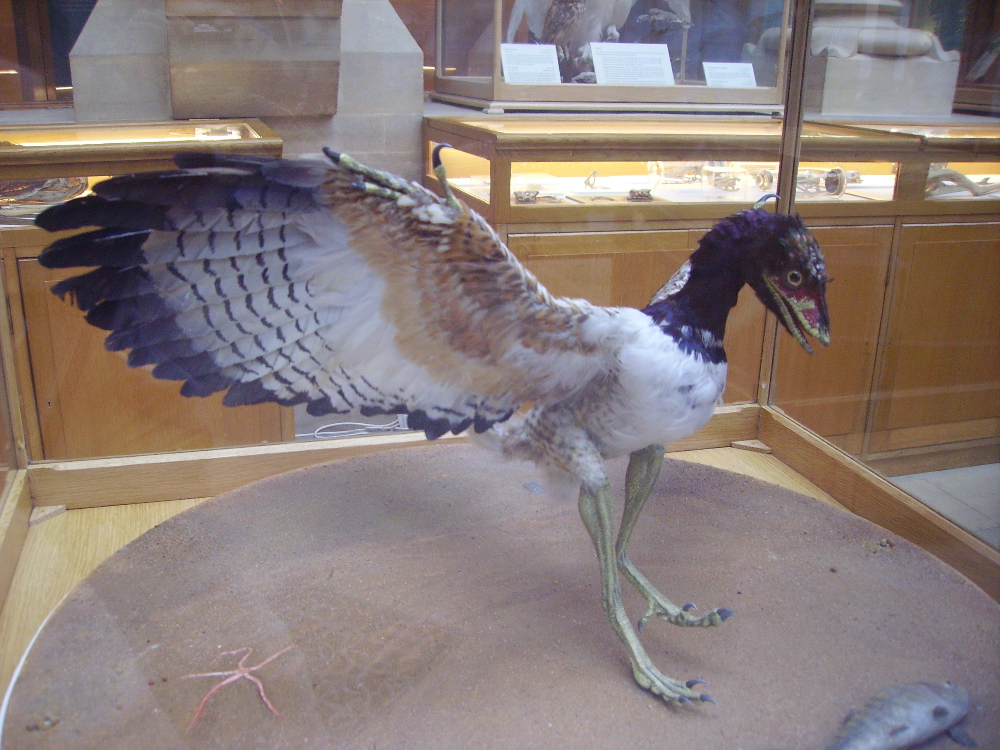
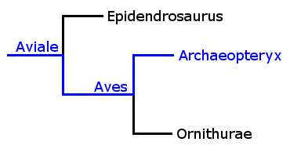

Unravelling the Evidence
Specimens:
Name: Archaeopteryx lithographica
{kind=link}
Age: ~150 million years
Size: ~50cm long
Archaeopteryx started this entire area of research, and provided the first solid evidence of the link between dinosaurs and birds when it was discovered in the mid 1800s. Unlike many other specimens, this was not discovered in Liaoning, but in Solnhofen, Germany.
Despite the age of the discovery, Archaeopteryx remains the earliest definite record of a feathered animal. It is the perfect 'transitional fossil' containing several features unique to modern birds, and others unique to reptiles. Many contentious fossils have been classified as some as earlier birds, but these could just as easily be classified as closely related dinosaurs instead. The age of Archaeopteryx may maintain it as the earliest bird forever, perhaps all other fossils will be close to birds, but still classified as dinosaurs.
References:
Mayr, G., Pohl, B. & Peters, D.S., 2005. A Well-Preserved Archaeopteryx Specimen with Theropod Features. Science, 310(5753), pp.1483 -1486.
Image Credit:
'Ballista', Archaeopteryx lithographica.jpg. Wikimedia Commons. Available at: http://commons.wikimedia.org/wiki/File:Archaeopteryx_lithographica.JPG [Accessed December 13, 2010].
{kind=link}